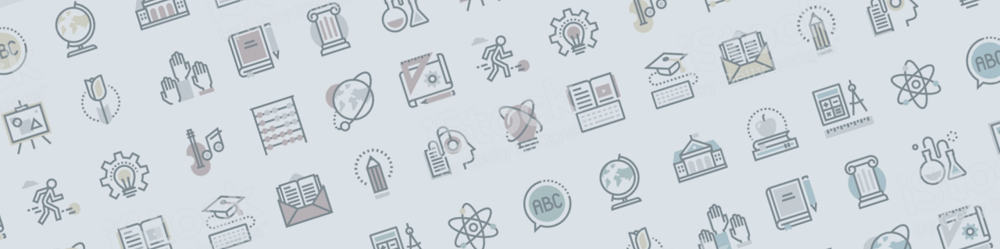

{{> partials/head }}
{{> partials/header }}

<main class="bootsmacss">
  <div class="layout--page-title">
    <div class="container">
      <div class="row">
        <div class="col-sm-5"><h2>Case study</h2></div>
        <div class="col-sm-7">
          <nav class="nav-horizontal pull-right">
            <a class="nav-horizontal__link" href="#">Home</a>
            <a class="nav-horizontal__link" href="#">About</a>
            <a class="nav-horizontal__link nav-horizontal__link--primary" href="#">Sign in / register</a>
          </nav>
        </div>
      </div>
    </div>
  </div>
  <div class="page-title">
    <h2 class="page-title__title">Helping students integrate into the life of the institution and the local
      community</h2>
    <div class="page-title__subtitle">Lunds University, Sweden</div>
  </div>
  <div class="tabs tabs--variant">
    <a href="case-study-introduction.html" class="tabs__item">Introduction</a>
    <a href="case-study-description.html" class="tabs__item">Description</a>
    <a href="case-study-contact.html" class="tabs__item is-active">Contact</a>
    <a href="case-study-further.html" class="tabs__item">Further leading</a>
  </div>
  <div class="layout--tab-content">
    <div class="layout--tab-content-inner">
      <h2>Contact</h2>
      <p class="text-center">
        <strong>Lund University International Desk</strong><br/>
        <a href="mailto:studentreception@lu.se">studentreception@lu.se</a>
      </p>
    </div>
  </div>
  
</main>

<div class="designs designs--case-study-contact"></div>

{{> partials/footer }}
{{> partials/scripts }}
